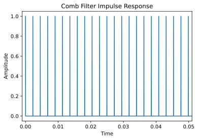

Week 4: Comb Filters
Chris Tralie
As we saw in module 7, it is possible to simulate echoes/reverberation with a process called "convlution." We create an "impulse response," which tells us the time lags and amplitudes of all of the echoes, and which can be written as a numpy array. And then we "convolve" this impulse response with a sound to hear what it would sound like with all of those echoes.
In this exercise, we'll be looking at a very special class of convolutions known as "comb filters." They get their name because they consist of equally spaced pulses which resemble the teeth on a comb. Below is an example:
In the following exercises, you'll hear how varying the width between the teeth and how varying the number of teeth affects the sound.
The following imports at the top of jupyter will come in handy. Recall how fftconvolve works just like np.convolve, but it's faster
Exercise 1: Shaping Noise
First, generate one second of random noise at 44100hz using the np.random.randn command. If you've done this right and you listen to it by itself, it should sound like static. Next, create a comb filter impulse with 100 samples in between the teeth, and listen to the convolution of the noise with this impulse response. Vary the following, and have your note taker take notes on what the results sound like
- Increase or decrease the number of teeth
- Increase or decrease the spacing between the teeth
Exercise 2: Making a note
Based on your observations above, see if you can create a comb filter that makes a pitch that you specify from a note number.
Exercise 3: Towards Vocoders
Instead of using noise as the original sound source, try using some other sound and passing it through a comb filter. Recall that you can load sound using librosa as
Click here to download an example. You will have to play around with the comb spacing and number of teeth to get the best results.